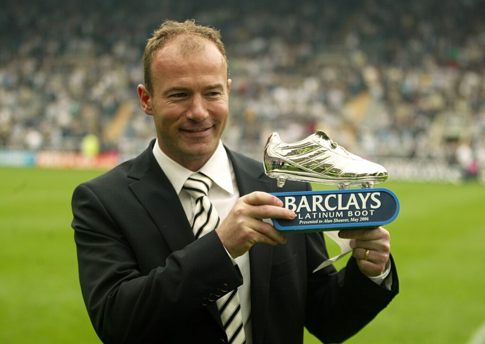

The top 10 all-time goalscorers in the Premier League are:

- Alan Shearer (260 Goals)
- Harry Kane (213 Goals)
- Wayne Rooney (208 Goals)
- Andrew Cole (187 Goals)
- Mohamed Salah (185 Goals)
- Sergio Aguero (184 Goals)
- Frank Lampard (177 Goals)
- Thierry Henry (175 Goals)
- Robbie Fowler (163 Goals)
- Jermain Defoe (162 Goals)